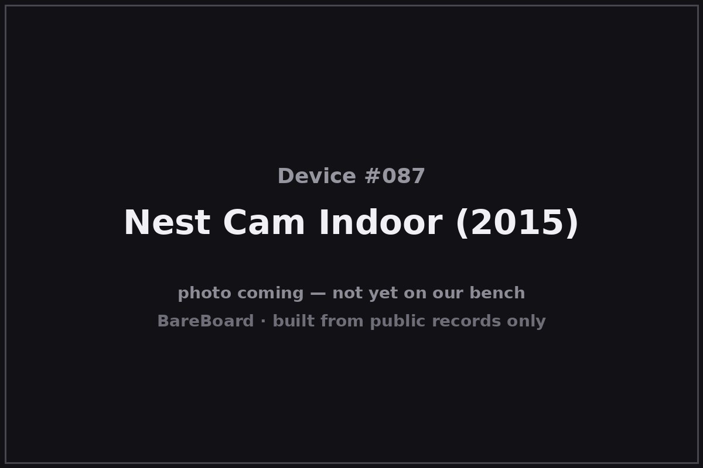

The Autopsy Report · Device #087
Nest Cam Indoor (2015)
The 2015 Nest Cam is where Nest's camera story starts: the company's first self-branded security camera, built on the bones of Dropcam — the startup Nest had acquired a year earlier. It looked like a Dropcam, talked like a Dropcam, but it said Nest on the box, and it dragged the whole Nest ecosystem into the camera age.
What is this thing?
The Nest Cam Indoor (2015) is a wired indoor security camera: 1080p video, a 130-degree field of view, eight infrared LEDs for night vision, and a microphone and speaker for two-way talk. TechCrunch It plugs into wall power — no battery — and leans on Nest's cloud service, Nest Aware, for recorded video history. AppleInsider
Whose box is this?
This one isn't on our bench — yet. Nothing here comes from a BareBoard teardown: no disassembly, no boot logs, no bench measurements, no firmware in our hands. Everything below is built from public records — the government's FCC filing, the manufacturer's own documents, and contemporary press — read carefully and cited line by line. That's the deal with these reports: when a fact can't be verified from a public record, we say so, out loud.
The moment this hardware crosses our bench, this report gets a second act: our own photos, our own measurements, and anything the public record got wrong gets corrected.
A short history
Nest announced the Cam on June 17, 2015, alongside a second-generation Protect smoke detector and a redesigned Nest app. AppleInsider It was the first fruit of Nest's 2014 acquisition of Dropcam: the hardware is visibly Dropcam-descended — slimmer, curvier, but unmistakably the same lineage — stepped up from 720p to 1080p. TechCrunch
It sold for $199, with Nest Aware cloud recording at $10/month for 10 days of history or $30/month for 30 days — a pricing model that made the camera cheap and the footage a subscription. TechCrunch
Researchers, take note: this is the 2015 original. A later filing, ZQANC111 (2019), and 2021-era Google filings belong to different hardware. Don't merge them.
The outside

The 2015 Cam is a small, slim, upright cylinder on a magnetic base — contemporary coverage describes it as a curvier, slimmer Dropcam, with a built-in tripod mount and a magnetic base that sticks to a fridge. TechCrunch The front face carries the lens ringed by the eight IR LEDs; the body is a single matte shell with the power cable exiting the base.
Reading the plastic
Mold marks, date wheels, material codes — the shell's birth certificate. This is bench-only evidence: without the physical unit in our hands, there's nothing honest to read here. What the enclosure looks like is described above from public photos; what's molded into it awaits the bench.
The board
No internal-photograph exhibit for this model has been verified in open research, so the board layout is unknown. The public record supports the functional blocks only: a 1080p image pipeline, Wi-Fi connectivity, IR night-vision drive, and a speaker/microphone audio path — the component identities await a donor unit.
Under the microscope: the chips
Unknown. No verified board photograph or bill of materials exists for the 2015 Nest Cam in the public records we've been able to reach. Naming chips here would be invention, and invention is the one thing this project refuses to do.
The government's file on this box
The FCC equipment authorization is FCC ID ZQANC11, grantee Nest Labs, Inc. fccid.io filing Do not confuse it with ZQANC111 (a 2019 filing) or later Google-era filings — those are different hardware with different authorizations.
Listening in
We have no boot log for this device — no unit on the bench means nothing to listen to. But the posture is worth stating up front, because it governs everything BareBoard ever does with a live device.
We listen, we don't knock. A serial console is a place to watch a device narrate its own startup, not a place to log in, change things, or break past anything the manufacturer locked. On our bench we attach read-only: power and ground, one receive wire, and silence on the transmit line. We never use JTAG or SWD debug headers to take control, never extract or modify firmware, never hunt for credentials, and never publish anything that would let someone else bypass a lock or defeat authentication.
When this device arrives, the first question will be: where does it talk, and does it talk to us unprompted? Until then, that question stays open.
What we found
- The 2015 Nest Cam launched June 17, 2015 at $199 — Nest's first self-branded camera, descended from Dropcam.
- 1080p, 130° field of view, 8 IR LEDs, two-way audio — with video history sold as the Nest Aware subscription.
- Its internals are undocumented in public records; keep it separate from the 2019 ZQANC111 filing.
What we didn't do
- We never opened a unit, attached to a debug port, or powered one up for this report.
- We never extracted, modified, or shared any firmware or software.
- We never published or used any credentials, keys, or bypass techniques.
- No boot logs, no bench measurements, and no photos of our own — because there is no unit of ours to photograph. The device photo above is credited in its caption.
By the numbers
- Launch: June 17, 2015
- Video: 1080p, 130° field of view
- Night vision: 8 infrared LEDs
- Audio: Microphone + speaker (two-way talk)
- Power: Wired (wall adapter)
- Price at launch: $199
- FCC ID: ZQANC11
- Bench status: Not yet on our bench
Words to know
- Dropcam
- The Wi-Fi camera startup Nest acquired in 2014; the 2015 Nest Cam is its direct descendant.
- Nest Aware
- Nest's cloud video-history subscription — the camera's recordings lived on Nest's servers.
- FCC ID
- The identifier the U.S. Federal Communications Commission assigns to authorized radio equipment; the filing is public.
Sources & confidence
- Nest launches a camera: meet the Nest Cam — TechCrunch, Jun 2015 link — Confirmed
- Nest unveils security camera, second-gen Protect, updated app — AppleInsider, Jun 2015 link — Confirmed
- FCC filing ZQANC11 (grantee: Nest Labs, Inc.) — fccid.io link — Confirmed
- Internal hardware (board layout, chip list) — no verified public exhibit found — Unknown
Legal note. BareBoard is an educational project. Everything on this page is derived from public records — our own bench work begins only when hardware arrives. We don't publish, host, or distribute firmware, keys, passwords, or credentials, and nothing here bypasses a lock, defeats authentication, or extracts software from a device. Product names and trademarks belong to their respective owners and appear here only to identify the hardware. If you believe anything here infringes your rights, contact us and we'll address it promptly.